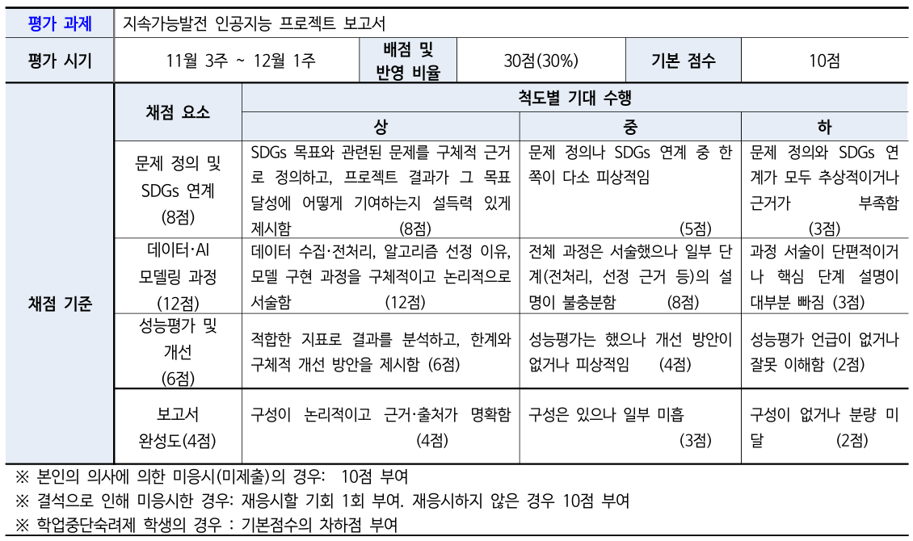
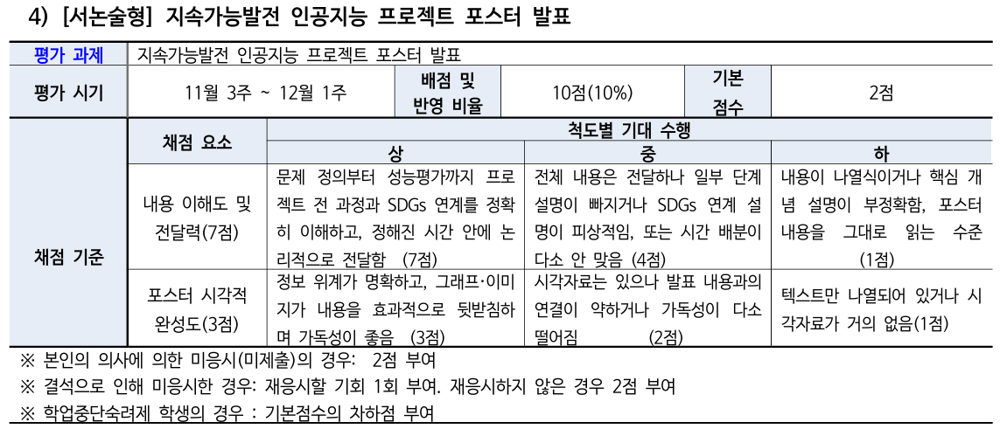

AI 수행평가 · 1차시 오리엔테이션
바이브 코딩으로 완성하는 인공신경망 프로젝트
오늘 순서: 써 보기 → SDGs란? → 평가 기준 → 포함·제출 → 일정 → 예제 → 개발 환경 → 시작
먼저 써 보기 · 3분
선생님 화면의 QR을 휴대폰으로 찍어요
예시 버튼을 누르거나, 재난문자를 직접 써 봐요
‘재해 이름 지우고 다시 해 보기’를 눌러요. 그래도 맞힐까요?
QR은 선생님 화면에
시연 노트북을 실행하면 새 QR이 나와요
이 웹앱 안에도 여러분이 배운 것이 들어 있어요: 글 → 숫자(TF-IDF) → 인공신경망 → 확률 → HTML 웹앱. W2단계에서 똑같이 만들어요.
SDGs란? · 지속가능발전목표
2015
UN 193개 회원국이 함께 채택
17
큰 목표
169
세부 목표 (11.5처럼 번호로 불러요)
2030
이루기로 한 해 · 누구도 소외되지 않게
주황색은 우리 네 주제가 다루는 목표예요. 다른 목표로 주제를 정해도 돼요(선생님과 상의).
SDGs를 탐구에 쓰는 법
목표 11
지속가능한 도시와 공동체
세부 목표 11.5
취약한 사람을 지키며 재난 피해를 크게 줄인다
내가 찾은 문제
재난문자가 어려워 외국인·어르신이 바로 이해하기 힘들다
내 AI 도구
문자 → 재난 유형 + 쉬운 행동 요령
| 주제 | 세부 목표 | 줄이려는 문제 |
|---|---|---|
| 위성 사진 | 15.1 · 11.3 | 숲과 농지가 줄고 도시가 퍼지는 것을 빨리 알아채기 어렵다 |
| 분리배출 | 12.5 | 재질을 몰라 잘못 버려 재활용이 안 된다 |
| 혐오 표현 | 16.1 · 10.3 | 혐오 댓글이 차별과 폭력으로 번진다 |
평가 기준 · 30점

평가 기준 · 10점

반드시 포함할 것, 제출할 것
보고서에 꼭 들어갈 것
SDG 세부 목표와 문제 · 교과 개념을 근거로 한 가설
데이터 출처와 이용 조건 · 정리한 기준
숫자로 바꾼 방법 · 신경망 구조와 튜닝 이유
정확도, 혼동행렬, 종류별 재현율
조건을 바꾼 시험 1가지 이상 · 한계와 개선 방안
AI에게 맡긴 것과 내가 판단한 것
제출물 4가지
① 보고서 (구글 문서 템플릿)
② A1 포스터 (구글 슬라이드 템플릿, 인쇄해서 발표)
③ 노트북 파일 + 정리한 데이터
④ 제미나이 대화 전체 (공유 링크 또는 PDF)
지킬 규칙 3가지
학교 계정 무료 제미나이, 대화방은 처음부터 끝까지 하나
AI가 쓴 문장을 보고서에 옮기지 않기
대화에 이름, 학번, 얼굴 사진 쓰지 않기
일정 · 11월 3주 ~ 12월 1주
| 차시 | 할 일 | 끝나면 남아야 하는 것 |
|---|---|---|
| 1 (오늘) | 주제 · 가설, 노트북 준비, 데이터 모으기 (A1~A3) | 데이터 파일, 출처 · 이용 조건 |
| 2 | 숫자로 바꾸기, 신경망 설계 · 학습 (1~3) | 모델 구조, 학습 곡선 |
| 3 | 튜닝, 시험 한 번, 틀린 예와 조건 바꾼 시험 (4~6) | 정확도, 혼동행렬, 실험 결과 |
| 4 | 내 말로 해석 쓰기, 웹앱 · QR (7, W1~W3) | 해석 문장, 웹앱 캡처 |
| 5, 6 | 보고서 쓰기, A1 포스터 만들기 | 보고서, 포스터 인쇄 |
| 7,8 | 발표, 친구 AI 써 보기 | 포스터 발표 |
예제
사진 · SDG 15.1
가장 무난해요
사진 · SDG 12.5
직접 찍은 사진을 더해요
글 · SDG 11.5 · 10.2
← 오늘의 예제
글 · SDG 16.1
허락받은 학생만
가설
대설과 한파가 가장 헷갈릴 것
데이터
11,904건 → 1,904건
결과
정확도 87.4%, 한파↔대설 혼동
실험
재해 이름 지우면
61.4%
개발 환경 · 함께 따라 하기
내 주제 노트북을 열고 파일 → 드라이브에 사본 저장
런타임 → 런타임 유형 변경 → T4 GPU (무료)
0번 준비 칸은 실행만, 1번 설정 칸은 내 것으로 고치고 실행
학교 계정 제미나이 새 대화, 이름 ‘SDG AI 프로젝트_출석번호’
노트북 맨 위 첫 메시지 + 설정 칸 내용 → “준비됐어”
이제 시작
1
SDGs를 해결할만한 프로젝트 주제 선정
2
데이터를 모으고 나누기까지 check 🎉
3
설정 칸 SOURCE · LICENSE 채우기
막히면: ⚠️ 문장을 그대로 대화방에 붙이기 → 세 번 고쳐도 안 되면 teacher("단계") · 안내서와 캐러셀은 언제든 다시 볼 수 있어요